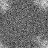

最小
最大
平均値
標準偏差
標準誤差
-65.0178
94.4699
4.85274
20.4635
0.255794
| オプション | 必須項目/選択項目 | NULL | デフォルト |
|---|---|---|---|
| -i | 必須 | 入力ファイル設定 | NULL |
| -o | 必須 | 出力ファイル設定 | NULL |
| -O | 選択 | 出力ファイル２設定 | stdout |
| -h | 選択 | ヘルプを表示 |
|
最小 |
-65.0178 |
|  | 最小 |
-65.0178 |